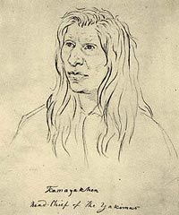
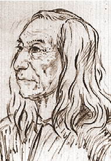
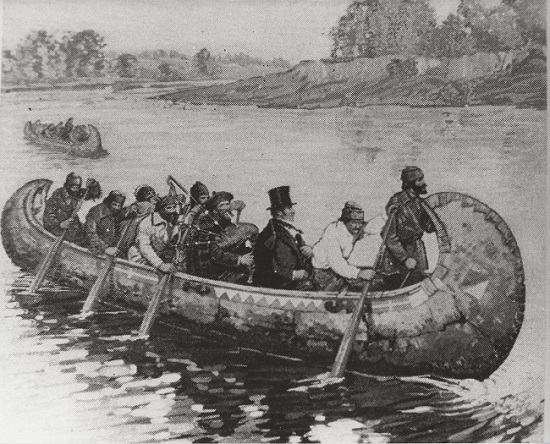
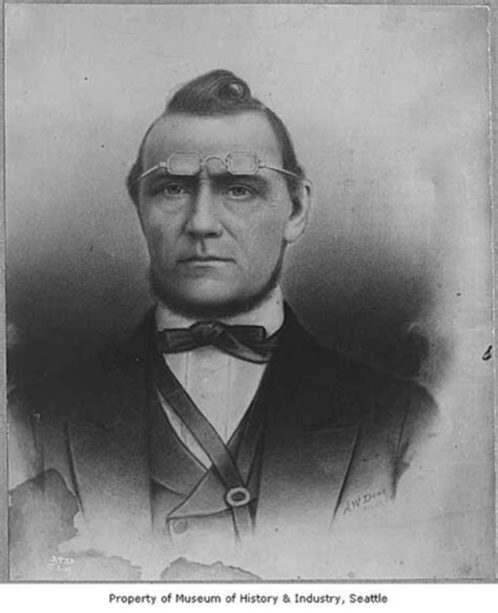

Nations, connections, encounters, treaties, resistance, and survival
Lives within a larger history
People in the Story
No single life can explain the transformation of the Northwest. Read together, however, these people reveal the choices, conflicts, misunderstandings, accommodations, and acts of survival behind the larger events.
Leadership, resistance, and memory
Indigenous Leaders and Witnesses
These individuals represented different nations and communities. They did not always agree on how best to respond to treaties, missions, settlement, and military power.

Yakama leader • c. 1800–1877
Kamiakin
A prominent Yakama leader who attended the 1855 Walla Walla treaty council and resisted the rapid seizure of Indigenous lands. His life stands near the center of the Yakama War, although later accounts often mix documented events with legend.
Mission connection: Kamiakin requested a Catholic mission at his Ahtanum summer camp. He and his men worked beside Oblate Fathers Charles Pandosy and Louis d’Herbomez, and he brought his children to the mission for baptism.
Leschi opposed the Medicine Creek Treaty, which confined the Nisqually to an inadequate reservation without access to the river and salmon central to their life. After the Puget Sound War, territorial authorities convicted and executed him for a death during wartime despite serious doubts about the charge and the fairness of his trials.
In 2004, a Historical Court of Inquiry and Justice unanimously concluded that Leschi should not have been tried for murder because he had acted as a combatant in a war. The decision could not legally erase the original conviction, but it formally recognized the injustice of his prosecution.

Yakama leader • c. 1800–1858
Owhi
Owhi was an influential Yakama leader, the father of Qualchan and Lo-Kout, and a brother-in-law of Kamiakin. He sought peace at critical moments but was imprisoned by Colonel George Wright and killed while attempting to escape.
Known as Loolowcan when he guided Theodore Winthrop across the Cascades in 1853, Lo-Kout later fought during the wars of 1855–1858. His memories offer a rare human-scale account of one Indigenous life across decades of upheaval.
A son of Owhi and nephew of Kamiakin, Qualchan fought during the wars of 1855–1858. His marriage to Whist-alks, a Spokane woman, reflects the kinship ties linking communities that resisted U.S. expansion. American officials accused him of many attacks, including the killing of Indian agent Andrew Bolon, although later accounts indicate that he was not involved in Bolon’s death.
By 1858 the Army had explicitly marked Qualchan and Kamiakin for capture or expulsion. After Wright imprisoned Owhi, Qualchan entered the Army camp with Whist-alks and Lo-Kout and was hanged within fifteen minutes, without a hearing or trial. The surviving accounts disagree about whether he had been summoned, knew his father was a prisoner, or believed that he was entering peace negotiations.
Hallalhotsoot, widely known as Lawyer, favored negotiation with the United States and signed the treaties of 1855 and 1863. His choices illuminate deep divisions within the Nimíipuu over whether accommodation could preserve their people and homeland.
Mission connection: Lawyer guided and interpreted for Protestant missionaries and helped them learn Nimíipuutímt. His close cooperation with missionaries became part of an accommodationist strategy that other Nimíipuu leaders did not share.
Moses became the best-known leader of the Columbia people and used diplomacy, resistance, and repeated negotiations to seek a homeland for communities across north-central Washington.
Mission connection: At about ten, his father sent him to Henry Spalding’s mission at Lapwai. He learned some English, Nimíipuutímt, Bible stories, and farming; Spalding gave him the name Moses. He was never baptized and returned home after about three years.
In 1879 President Rutherford B. Hayes created the Columbia Reservation, often called the Moses Reservation. It extended from the Columbia River and Lake Chelan north to Canada, between the Cascade crest and the Okanogan River, encompassing the homelands of several peoples as well as existing settler and mining claims. Settlers immediately pressed the government to reopen it. Under an 1883 agreement, Indigenous families were offered a choice between allotments and removal to the Colville Reservation; Congress restored the land to the public domain in 1884, and it formally opened to non-Native settlement in 1886. The reservation’s brief existence shows how quickly a federal promise of protected land could be withdrawn when settlers and mining interests demanded access.
Garry repeatedly sought a peaceful settlement of Spokane land claims, yet died after settlers had taken much of the land he tried to protect.
Mission connection: As a boy, Garry was sent to the Church Missionary Society school at Red River. He returned home literate, Christian, and able to speak English, then taught other Spokane people while continuing to serve as one of their leaders.
Hinmatóowyalahtq̓it became an internationally recognized voice for the non-treaty Nimíipuu after the war and forced removal of 1877. His speeches and diplomacy carried his people’s demand to return to the Wallowa homeland before a national audience.
Mission connection: His father, Tuekakas, was an early convert associated with Henry Spalding and received the Christian name Joseph. As relations deteriorated and settlers pressed into Nimíipuu country, the elder Joseph rejected the mission’s influence. His son inherited both the name and that history of changing trust.
Allalimya Takanin initially tried to keep his Alpowai band out of the Nez Perce War. After U.S. troops attacked his peaceful camp inside the reservation, he joined the flight of 1877 and became one of its principal military strategists; he was killed at Bear Paw, within reach of the Canadian border.
Traders and missionaries entered an Indigenous world already connected by travel, exchange, kinship, and spiritual traditions.

Surveyor and fur trader • 1770–1857
David Thompson
Working for the North West Company, Thompson mapped the Columbia watershed and helped establish Kootanae, Kullyspel, Saleesh, and Spokane houses. His journals preserve important observations while also documenting the expansion of the land-based fur trade.
Whitman established the Waiilatpu mission among the Cayuse with his wife, Narcissa. Cultural conflict, settler migration, and a deadly measles epidemic shattered relations; Cayuse men killed the Whitmans and eleven others in 1847.
Primary sources: Read the Marcus and Narcissa Whitman Collection at the Oregon Historical Society. Their letters and journals document the journey west, life at Waiilatpu, relations with the Cayuse, growing settler migration, and Protestant–Catholic rivalry. These writings are valuable firsthand evidence, but they also reflect the missionaries’ cultural assumptions and frequently patronizing views of Indigenous people.
Henry and Eliza Spalding established a Protestant mission among the Nimíipuu at Lapwai in 1836. Their work included teaching, printing, and farming, alongside pressure to adopt Christianity and a more settled agricultural life. His mission appears repeatedly in the lives of Chief Moses, Chief Lawyer, and Chief Joseph’s family.
Spalding was also intensely anti-Catholic. Competition with Catholic missionaries shaped his interpretation of events, and after the 1847 killings at Waiilatpu he publicly accused Catholic priests of complicity—an allegation that was widely circulated but never convincingly substantiated.
The Italian-born Jesuit spent decades establishing Catholic missions and schools among Indigenous communities of the Inland Northwest. He founded Gonzaga College in Spokane in 1887, part of a missionary legacy that combined enduring relationships with strong pressure toward religious and cultural assimilation.
The Corps of Discovery crossed the Northwest with essential Indigenous food, information, horses, guidance, and diplomacy. Their journals describe Native nations in detail, but the expedition also advanced an American claim to lands that were already inhabited and governed.
The surviving written record was often created by men participating in settlement and conquest. Their testimony remains useful, but it must be read critically.

Physician, Indian agent, and Seattle founder • 1808–1873
David “Doc” Maynard
Maynard was a physician, merchant, local Indian agent, and one of Seattle’s founders. More willing than many settlers to maintain relationships with Indigenous people, he became a friend of Chief Seattle and promoted naming the settlement for him.
Shortly before the Battle of Seattle, Maynard and his wife, Catherine, carried out orders to move approximately 434 Indigenous people considered friendly to the settlers across Puget Sound, reportedly paying the expense themselves. He helped protect noncombatants but did not command the American defense.
As Washington Territory’s first governor and superintendent of Indian affairs, Stevens hurried treaty negotiations designed to extinguish Native title and open land to settlement. He later served as a Union general and was killed at the Battle of Chantilly in Virginia on September 1, 1862.
Haller led the first U.S. Army force sent into Yakama country after the killing of Indian agent Andrew Bolon. In October 1855, Kamiakin’s warriors forced his badly outnumbered command to retreat at Toppenish Creek. The defeat showed that the Army had underestimated Yakama resistance and helped turn a confrontation into a wider war.
Steptoe led an armed column north from Fort Walla Walla in May 1858, describing the expedition as peaceful while carrying mountain howitzers into Indigenous country. Spokane, Coeur d’Alene, Palouse, Yakama, and other warriors defeated his command at Tohotonimme, or Pine Creek. The Army answered this Indigenous victory by sending George Wright’s much larger punitive expedition.
Wright led the decisive 1858 military campaign against the Spokane, Coeur d’Alene, Palouse, and their allies. His troops defeated Indigenous forces, slaughtered hundreds of horses, destroyed food supplies, and conducted summary executions to compel submission.
Winthrop crossed the Cascades in 1853 with Lo-Kout as his guide and later turned the journey into The Canoe and the Saddle. His vivid account preserves valuable observations while also displaying the racial prejudice and literary invention of its era.
Splawn entered Washington Territory at fifteen and later became a cattleman, businessman, and public official. His recollections preserved testimony from Indigenous people including Lo-Kout, but his memoir remains a settler account that must be checked against other evidence.